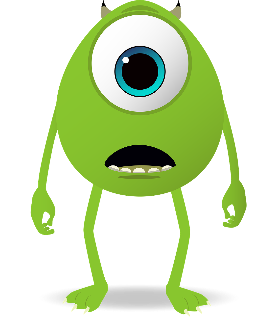

Feedback profesional para llevar tus proyectos al siguiente nivel
Me encanta el momento en que llego a clase, apago las luces y proyecto una imagen con los entrañables personajes de Pixar con un titular provocador: "Las películas de Pixar apestan". Y justo ahí, en medio de su desconcierto, les lanzo la pregunta: "¿Por qué un alto directivo de Pixar diría esto de sus propias creaciones?". Observo sus caras y escucho activamente sus respuestas
Para tener un poco más de contexto, si te apetece puedes leer el siguiente artículo: 'BrainTrust' o la técnica de Pixar para crear obras maestras
¿Qué es el Braintrust de Pixar?
El Braintrust de Pixar, lo descubrí leyendo el libro: "Creatividad, S.A.: Cómo llevar la inspiración hasta el infinito y más allá".
Es una práctica interna, creada por el estudio de animación, para mejorar sus películas durante el proceso de creación de las mismas. Se basa en reuniones periódicas, en diferentes momentos de la creación de sus películas, en las que un grupo de personas, con diferentes perfiles ( ¡ojo! no solo los jefes y jefas ) revisan el trabajo en curso (la historia, personajes, etc) y ofrecen críticas sinceras y constructivas.
Lo que Ed Catmull está sugiriendo, no es que las películas de su estudio sean malas por naturaleza. Más bien, está enfatizando un punto crucial: la calidad excepcional de las películas de Pixar es el resultado directo de su riguroso y honesto proceso de retroalimentación. Es decir sin utilizar el Braintrust sus películas nunca hubiesen llegado tan lejos.
🔍 ¿Qué lo hace especial?
- Sin jerarquías: todos los participantes tienen voz, no importa su cargo.
- Crítica honesta y directa, centrada en la historia, animación o trabajo realizado y nunca en la persona que desarrolló la idea.
- No se imponen soluciones, solo se plantean preguntas o sugerencias. El creador de esa parte del proyecto tiene la última palabra.
- Se basa en la confianza y la colaboración, no en el juicio.
¿Cómo aplicar el "Braintrust" en clase?
Para trasladar el exitoso modelo de Pixar al aula y fomentar la retroalimentación constructiva entre los estudiantes, podemos adaptar el concepto de "Braintrust" con el objetivo de crear un espacio de colaboración donde el alumnado aprenda a dar y recibir feedback con el objetivo de mejorar sus proyectos.
Para ello, establece un "Círculo de Confianza" o "Braintrust" (o el nombre que elijan los estudiantes) donde periódicamente se presenten los avances de los diferentes proyectos a lo largo de todo el año escolar. La clave, es que los alumnos comprendan que este espacio es para ayudarse mutuamente a mejorar, no para juzgar.
El profesor como facilitador y guía, debe modelar cómo dar y recibir feedback. Por ejemplo puedes empezar ofreciendo ejemplos de críticas constructivas a trabajos anónimos de otros años para que vean cómo se hace.
Las sesiones pueden ser quincenales o en diferentes puntos de los proyectos, donde cada estudiante o grupo de trabajo presenta sus progresos, intenciones y desafíos a los que se enfrenta.
Normas para una retroalimentación efectiva
Para que el "Círculo de Confianza" funcione como un verdadero "Braintrust", es fundamental establecer y practicar estas normas:
- Sé específico y accionable: En lugar de "no me gusta", ofrecer información específica de aquello que consideres que se puede mejorar e incluso una acción para mejorarlo, por ejemplo "creo que si cambias la iluminación en esta escena, el ambiente será más misterioso".
- Enfócate en el trabajo, no en la persona: La crítica es sobre el proyecto, nunca sobre el creador.
- Ofrece soluciones, no solo problemas: Si señalas algo que no funciona, intenta proponer una posible mejora.
- La decisión final es del creador: Al igual que en Pixar, quien presenta el proyecto es el único responsable de decidir qué feedback incorporar. Esto empodera al estudiante y le enseña a discernir.
- Cierra el ciclo: Anima a los estudiantes a compartir cómo el feedback les ayudó a mejorar su proyecto en la siguiente iteración.
Al implementar el Braintrust en clase, no solo verás cómo los proyectos de tus alumnos alcanzan un nivel superior, sino que también desarrollarán habilidades esenciales para la vida: pensamiento crítico, comunicación efectiva, resiliencia y la capacidad de colaborar proactivamente.
Guía práctica con algunas ideas para modelar feedback en clase:
A continuación os presento tres modelos: 1. SPARK, 2. TAG y 3. “I like / I wish / I wonder” que os pueden ayudar a modelar el proceso de feedback en clase.
🚀 Paso 1 – Puedes introducir cada uno de los modelos en diferentes actividades previas al proyecto final, durante el curso:
- 1. SPARK:
- Specific (Específico) — Señala una parte concreta del proyecto o trabajo.
- Prescriptive (Prescriptivo) — Indica una recomendación de cómo mejorar.
- Actionable (Accionable) — La sugerencia anterior de mejora debe ser algo que el alumno pueda realmente hacer.
- Referenced (Referenciado) — Basado en algo del trabajo.
- Kind (Amable) — Respetuoso y motivador.
- 2. TAG:
- Tell (Di algo que te gustó)
- Ask (Pregunta para entender mejor)
- Give suggestion (Da una sugerencia para mejorar)
- “I like / I wish / I wonder”:
- I like (Me gusta…)
- I wish (Desearía que…)
- I wonder (Me pregunto si…)
🚀 Paso 2 – Modelado por parte del docente
El docente demuestra ejemplos de feedback en voz alta, mostrando proyectos anónimos de años anteriores para que los estudiantes los escuchen y entiendan el formato:
Ejemplo SPARK: recuerda que no es obligatorio cubrir todos los puntos en cada feedback.
Pero cuantos más cumplas, más claro, útil y amable será el comentario. Un feedback podría ser solo Specific + Actionable + Prescriptive y seguir siendo válido.
Por ejemplo en relación con una APP móvil:
- "En la pantalla de inicio, los botones están muy juntos y no se diferencian bien. (Specific)
- Te recomiendo aumentar el espacio entre ellos al menos un 5%. (Prescriptive)
- Puedes hacerlo incluyendo un espacio vertical invisible, con un espacio horizontal entre los botones en APP Inventor. (Actionable)""
Ejemplo TAG
- Tell: "Me encantó la creatividad de tu pantalla incial de tu APP."
- Ask: "¿Qué te inspiró a usar esos colores?"
- Give: "Podrías hacerla un poquito más pequeña y añadir un fondo para que destaque más."
Ejemplo “I like (me gusta) / I wish (deseraría que) / I wonder (me pregunta si)”:
- "Me gusta mucho las imágenes que usaste para apoyar tu explicación. Desearía que hablases un poco más despacio para que todos pudieran entenderla mejor. Me pregunto si podrías incluir un juego o concurso de preguntas al final, para hacerlo más interactivo y así involucrar a toda la clase."
🚀 Paso 3 – Práctica en conjunto
Actividad grupal: Enseña un trabajo anónimo de otros años y los estudiantes dan feedback en grupos usando SPARK, TAG o “I like / I wish / I wonder”.
El docente supervisa y guía al alumnado para mejorar el proceso del feedback. Si así lo consideras oportuno, puedes realizar unas fotocopias con los diferentes métodos y con ejemplos concisos que resuenen en tu clase en relación con los trabajos a revisar y así el alumnado puede consultar la guía para construir el feedback de una manera más efectiva en las primeras sesiones.
🚀 Paso 4 – Feedback real en presentaciones
Cada alumno o grupo de trabajo presenta su proyecto.
Los demás escuchan y toman notas.
Se facilita un espacio donde el alumnado se sienta seguro para dar feedback.
Los autores reflexionan sobre la retroalimentación recibida: qué les fue útil y qué áreas identifican como oportunidades de mejora.
Imagen 1: Mike Wazowski, Monster, Monsters Inc royalty-free stock illustration. Free for use & download from Pixabay